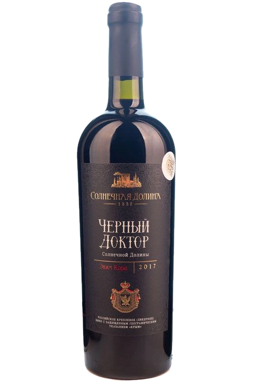
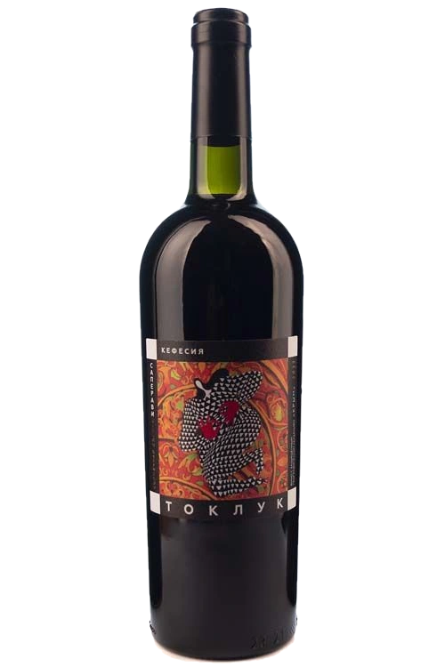

Эким Кара
«Чёрный доктор» — так в долине назвали почти чернильную ягоду, и имя перешло вину. Сорт растёт только здесь.
В винах: Чёрный Доктор · Меганом
Судак · Крым · с 1888 года
Вам есть восемнадцать лет?
Сайт содержит информацию, не рекомендованную лицам младше 18 лет
Винодельня · Судак · Крым · 44°52′N 35°02′E
Вина, которые существуют
только в одной долине на Земле
02 · Долина
В 1888 году князь Горчаков купил Токлукское имение, а Лев Голицын заложил в «Архадерессе» первые подвалы — не штольни, а достроенные овраги. Солнце, сланец и морской ветер сделали остальное — здесь выжили автохтоны, не существующие больше нигде.
03 · У лозы
«Чёрный доктор» — так в долине назвали почти чернильную ягоду, и имя перешло вину. Сорт растёт только здесь.
В винах: Чёрный Доктор · Меганом
Древний крымский сорт, вино из него — плотное, пряное, с тонами чернослива и кожи. Растёт на сланцах Токлука.
В винах: Токлук · Чёрный Доктор
«Чёрный полковник» — сорт, давший имя второму легендарному вину долины. Тёмная ягода, долгая выдержка.
В винах: Чёрный Полковник
Белый автохтон Судака: янтарная ягода, цветочный аромат, свежесть моря. Из него — Кокур и игристый брют.
В винах: Кокур · Кокур брют
Подвалы Архадерессе · заложены в 1888 году · +14 °C круглый год
04 · Подвал

ликерные · эким кара
войти в подвал →
классика дома · с 1888
войти в имение →
сухие · терруар мыса
выйти на мыс →
автохтоны · фолк-этикетки
войти в урочище →Четыре мира дома. Клик — войти
Вся винная карта дома 83 вина · четыре линейки · четыре автохтона — от сухих Меганома до коллекционного Чёрного Доктора открыть карту →06 · Визит
Экскурсия по голицынским подвалам и дегустация 10 марок вин — ежедневно с 10:00 до 17:00, от 1 450 ₽. Дегустация при свечах, среди бочек и коллекционных бутылок конца XIX века.
Забронировать дегустациюс. Миндальное, ул. Миндальная, 8А · Судак · как доехать из Судака — 15 минут
07 · Признание
Гран-при «Золотой Грифон» · медали «Продэкспо», «Южная Россия», Кубок СВВР · ЗГУ «Крым»
Кабинет сомелье: техкарты 83 вин, конструктор винной карты, контакты отдела продаж.
Открыть кабинетТридцать семь фирменных магазинов и баров в Крыму, федеральные сети и винотеки по всей России.
Смотреть адреса08 · Где купить
с. Миндальное, ул. Миндальная, 8А · Судак
фирменный магазин и бар · ежедневно 10:00–20:00
Рядом — дегустационный комплекс «Архадерессе»
Всего 37 точек · ежедневно с 10:00
Магнит · Пятёрочка · Перекрёсток · METRO · Глобус · Selgros · Мираторг · О’КЕЙ · Да! · Табрис · Самбери · Высшая лига · Твой дом
Отдохни · Сомелье · Алкотека · MAVT Винотека · Виноград · Серебряный шар · Гильдия
Москва, Дегтярный переулок, 9
Судак, с. Солнечная Долина, ул. Черноморская, 23
пн–пт 8:00–17:00
Оптовые поставки и HoReCa — через отдел продаж